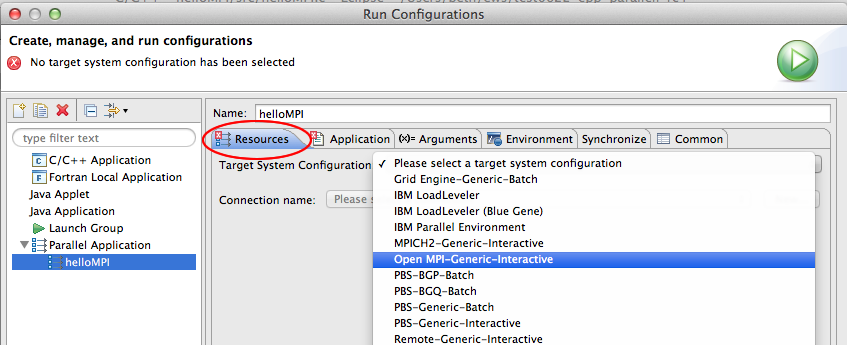
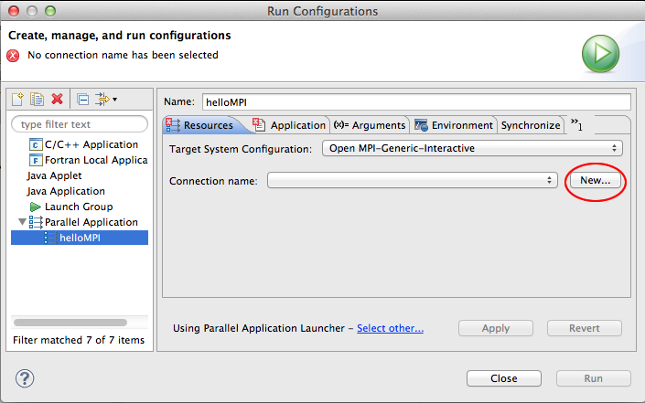
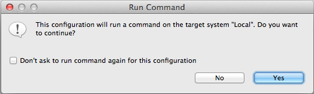
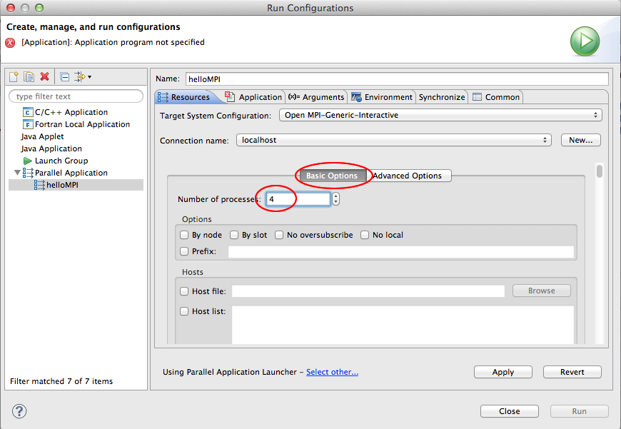
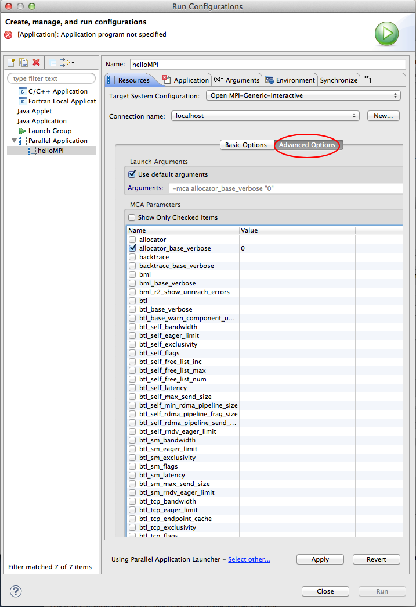

This section describes how to set up a run configuration using Open MPI as a target system configuration for the Parallel Tools Platform (PTP).
When running an Open MPI program from PTP, first create a C/C++/Fortran project, and build it. For more information, see
As described in Running Parallel Programs, next create a run configuration via Run > Run Configurations ... and create a new Parallel Application.
The specifics for running an Open MPI program with PTP are specified on the Resources tab of the run configuration. For Target System Configuration, select OpenMPI-Generic-Interactive

Then specify a connection. If you have already specified a connection, e.g. for a Synchronized Project or a remote project, it will be selected already. If you are launching a local application, which we are doing in this example, select the radio button for "Local."

See Creating Remote Connections and Local Connections
Note: To edit connection information after a connection has been created, e.g. to change user name or password, see Editing Remote Connections.
After specifying Local (or selecting a Connection) it will ask to run a command on the system. Select Yes to continue. Check the Don't ask to run command again for this configuration to avoid being asked again for this launch configuration.

Fill in the OpenMPI options you need. On the Basic Options tab here we specify 4 processes.

On the Advanced Options tab, other arguments can be specified; using a checkbox will fill in the checked argument.

Now continue with the run configuration setup for running your parallel application by specifying the Application program on the Application tab, and any other information required.